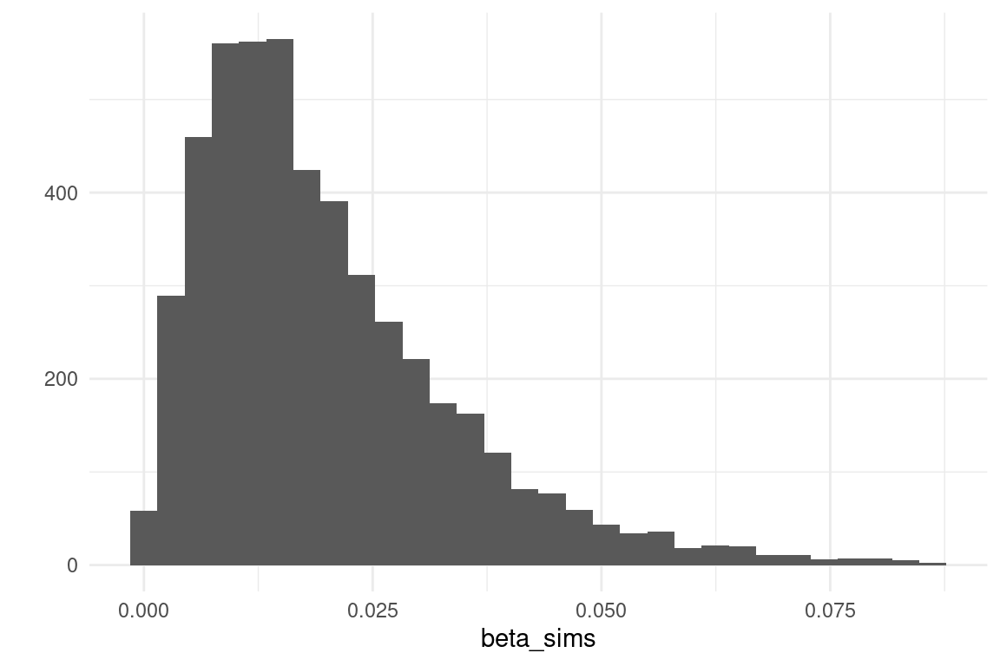

Sección 11 Calibración bayesiana y Regularización
El enfoque bayesiano se puede formalizar coherentemente en términos de probabilidades subjetivas, y como vimos, esta es una fortaleza del enfoque bayesiano.
En la práctica, sin embargo, muchas veces puede ser difícil argumentar en términos exclusivos de probabilidad subjetiva, aunque hagamos los esfuerzos apropiados para incorporar la totalidad de información que distintos actores involucrados pueden tener.
Consideremos, por ejemplo, que INEGI produjera un intervalo creíble del 95% para el ingreso mediano de los hogares de México. Aún cuando nuestra metodología sea transparente y correctamente informada, algunos investigadores interesados puede ser que tengan recelo en usar esta información, y quizá preferirían hacer estimaciones propias. Esto restaría valor al trabajo cuidadoso que pusimos en nuestras estimaciones oficiales.
Por otra parte, el enfoque frecuentista provee de ciertas garantías mínimas para la utilización de las estimaciones, que no dependen de la interpretación subjetiva de la probabilidad, sino de las propiedades del muestreo. Consideremos la cobertura de los intervalos de confianza:
- Bajo ciertos supuestos de nuestros modelos, la probabilidad de que un intervalo de confianza del 95% cubra al verdadero valor poblacional es del 95%. Esta probabilidad es sobre las distintas muestras que se pueden obtener según el diseño del muestreo.
Los intervalos creíbles en principio no tienen por qué cumplir esta propiedad, pero consideramos que en la práctica es una garantía mínima que deberían cumplir.
El enfoque resultante se llama bayesiano calibrado, Little (2011) . La idea es seguir el enfoque bayesiano usual para construir nuestras estimaciones, pero verificar hasta donde sea posible que los intervalos resultantes satisfacen alguna garantía frecuentista básica.
Observación. checar que la cobertura real es similar a la nominal es importante en los dos enfoques: frecuentista y bayesiano. Los intervalos frecuentistas, como hemos visto, generalmente son aproximados, y por lo tanto no cumplen automáticamente esta propiedad de calibración.
Enfoque bayesiano y frecuentista
Los métodos estadísticos clásicos toman el punto de vista frecuentista y se basa en los siguientes puntos (Wasserman (2013)):
La probabilidad se interpreta como un límite de frecuencias relativas, donde las probabilidades son propiedades objetivas en el mundo real.
En un modelo, los parámetros son constantes fijas (desconocidas). Como consecuencia, no se pueden realizar afirmaciones probabilísticas útiles en relación a éstos.
Los procedimientos estadísticos deben diseñarse con el objetivo de tener propiedades frecuentistas bien definidas. Por ejemplo, un intervalo de confianza del \(95\%\) debe contener el verdadero valor del parámetro con frecuencia límite de al menos el \(95\%\).
En contraste, el acercamiento Bayesiano muchas veces se describe por los siguientes postulados:
La probabilidad describe grados de creencia, no frecuencias limite. Como tal uno puede hacer afirmaciones probabilísticas acerca de muchas cosas y no solo datos sujetos a variabilidad aleatoria. Por ejemplo, puedo decir: “La probabilidad de que Einstein tomara una taza de té el primero de agosto de \(1948\)” es \(0.35\), esto no hace referencia a ninguna frecuencia relativa sino que refleja la certeza que yo tengo de que la proposición sea verdadera.
Podemos hacer afirmaciones probabilísticas de parámetros.
Podemos hacer inferencia de un parámetro \(\theta\) por medio de distribuciones de probabilidad. Las inferencias como estimaciones puntuales y estimaciones de intervalos se pueden extraer de dicha distribución.
Finalmente, en el enfoque bayesiano calibrado (Little (2011)):
- Usamos el enfoque bayesiano para modelar y hacer afirmaciones probabilísticas de los parámetros.
- Buscamos cumplir las garantías frecuentistas del inciso 3).
Ejemplo: estimación de una proporción
Recordamos nuestro problema de estimación de una proporcion \(\theta\). Usando la distribución inicial \(p(\theta)\sim \mathsf{Beta}(2,2)\), y la verosimilitud estándar binomial, vimos que la posterior cuando observamos \(k\) éxitos es \[p(\theta|k) \sim \mathsf{Beta}(k + 2, n - k + 2)\].
La media posterior es \[\frac{k + 2}{n + 4} \] que podemos interpretar como: agrega 2 éxitos y 2 fracasos a los datos observados y calcula la proporción de éxitos. Un intervalo posterior de credibilidad del 95% se calcula encontrando los cuantiles 0.025 y 0.975 de una \(\mathsf{Beta}(k + 2, n - k + 2)\)
\[I_a = \left [q_{0.025}(k+2, n+4), q_{0.975}(k+2, n+4)\right ]\] Que compararemos con el intervalo usual de Wald: si \(\hat{\theta} = \frac{k}{n}\), entonces
\[I_w = \left [\hat{\theta} - 2 \sqrt{\frac{\hat{\theta}(1-\hat{\theta})}{n}}, \hat{\theta} + 2 \sqrt{\frac{\hat{\theta}(1-\hat{\theta})}{n}}\right]\] ¿Cómo podemos comparar la calibración de estos dos intervalos? Nominalmente, deben tener cobertura de 95%. Hagamos un ejercicio de simulación para distintos tamaños de muestra \(n\) y posibles valores \(\theta\in (0,1)\):
set.seed(332)
simular_muestras <- function(M, n, p){
k = rbinom(M, n, p)
tibble(rep = 1:M, n = n, p = p, k = k)
}
intervalo_wald <- function(n, k){
p_hat <- k / n
ee_hat <- sqrt(p_hat * (1 - p_hat) / n)
tibble(inf = p_hat - 2 * ee_hat, sup = p_hat + 2 * ee_hat)
}
intervalo_bayes <- function(n, k, a = 2, b = 2){
a <- k + a
b <- n - k + b
tibble(inf = qbeta(0.025, a, b), sup = qbeta(0.975, a, b))
}
set.seed(812)
ejemplo <- simular_muestras(5, 20, 0.4)ejemplo %>% mutate(intervalo = intervalo_wald(n, k)) %>% pull(intervalo) %>%
bind_cols(ejemplo) %>% select(-rep)## # A tibble: 5 × 5
## inf sup n p k
## <dbl> <dbl> <dbl> <dbl> <int>
## 1 0.0211 0.379 20 0.4 4
## 2 0.228 0.672 20 0.4 9
## 3 0.276 0.724 20 0.4 10
## 4 0.228 0.672 20 0.4 9
## 5 0.137 0.563 20 0.4 7ejemplo %>% mutate(intervalo = intervalo_bayes(n, k)) %>% pull(intervalo) %>%
bind_cols(ejemplo) %>% select(-rep)## # A tibble: 5 × 5
## inf sup n p k
## <dbl> <dbl> <dbl> <dbl> <int>
## 1 0.102 0.437 20 0.4 4
## 2 0.268 0.655 20 0.4 9
## 3 0.306 0.694 20 0.4 10
## 4 0.268 0.655 20 0.4 9
## 5 0.197 0.573 20 0.4 7¿Cuáles de estos intervalos cubren al verdadero valor? Nótese que no podemos descalificar a ningún método por no cubrir una vez. Es fácil producir un intervalo con 100% de cobertura: (0,1). Pero no nos informa dónde es probable que esté el parámetro.
Sin embargo, podemos checar la cobertura frecuentista haciendo una cantidad grande de simulaciones:
parametros <- crossing(n = c(5, 10, 30, 60, 100, 400),
p = c(0.01, 0.015, 0.02, 0.025, 0.03, 0.035, 0.04, 0.05, 0.07, 0.1, 0.15))
set.seed(2343)
# simulaciones
simulaciones <- parametros %>%
mutate(muestra = map2(n, p, ~ simular_muestras(50000, .x, .y) %>% select(rep, k))) %>%
unnest(muestra)
# calcular_cobertura
calcular_cobertura <- function(simulaciones, construir_intervalo){
# nombre de función
intervalo_nombre <- substitute(construir_intervalo) %>% as.character()
cobertura_tbl <- simulaciones %>%
mutate(intervalo = construir_intervalo(n, k)) %>%
pull(intervalo) %>%
bind_cols(simulaciones) %>%
mutate(cubre = p >= inf & p <= sup) %>%
group_by(n, p) %>%
summarise(cobertura = mean(cubre), long_media = mean(sup - inf))
cobertura_tbl %>% mutate(tipo = intervalo_nombre)
}cobertura_wald <- calcular_cobertura(simulaciones, intervalo_wald)
cobertura_wald## # A tibble: 66 × 5
## # Groups: n [6]
## n p cobertura long_media tipo
## <dbl> <dbl> <dbl> <dbl> <chr>
## 1 5 0.01 0.0483 0.0347 intervalo_wald
## 2 5 0.015 0.0733 0.0527 intervalo_wald
## 3 5 0.02 0.0954 0.0689 intervalo_wald
## 4 5 0.025 0.119 0.0862 intervalo_wald
## 5 5 0.03 0.140 0.102 intervalo_wald
## 6 5 0.035 0.165 0.120 intervalo_wald
## 7 5 0.04 0.187 0.137 intervalo_wald
## 8 5 0.05 0.227 0.167 intervalo_wald
## 9 5 0.07 0.299 0.223 intervalo_wald
## 10 5 0.1 0.398 0.303 intervalo_wald
## # ℹ 56 more rowsgraficar_cobertura <- function(cobertura_tbl){
ggplot(cobertura_tbl, aes(x = p, y = cobertura, colour = tipo)) +
geom_hline(yintercept = 0.95, colour = "black") +
geom_line() + geom_point() +
facet_wrap(~n) +
ylim(0, 1)
}
cobertura_wald %>%
graficar_cobertura()La cobertura real es mucho más baja que la nominal en muchos casos, especialmente cuando la \(p\) es baja y \(n\) es chica. Pero incluso para muestras relativamente grandes (100), la cobertura es mala si \(p\) es chica.
Ahora probamos nuestro método alternativo:
cobertura_bayes <- calcular_cobertura(simulaciones, intervalo_bayes)bind_rows(cobertura_wald, cobertura_bayes) %>%
mutate(tipo = factor(tipo, levels = c('intervalo_wald', 'intervalo_bayes'))) %>%
graficar_cobertura()Y vemos que en general el intervalo de Bayes es superior al de Wald, en sentido de que su cobertura real es más cercana a la nominal. El caso donde fallan los dos es para muestras muy chicas \(n=5, 10\), con probabilidades de éxito chicas \(p\leq 0.02\).
- Sin embargo, si tenemos información previa acerca del tamaño de la proporción que estamos estimando, es posible obtener buena calibración con el método bayesiano.
En este caso particular, tenemos argumentos frecuentistas para utilizar el método bayesiano. Por ejemplo, si el INEGI utilizara estos intervalos creíbles, un análisis de calibración de este tipo sostendría esa decisión.
Intervalos de Agresti-Coull
Un método intermedio que se usa para obtener mejores intervalos cuando estimamos proporciones es el siguiente:
- Agregar dos 1’s y dos 0’s a los datos.
- Utilizar el método de Wald con estos datos modificados.
intervalo_agresti_coull <- function(n, k){
p_hat <- (k + 2)/ (n + 4)
ee_hat <- sqrt(p_hat * (1 - p_hat) / n)
tibble(inf = p_hat - 2 * ee_hat, sup = p_hat + 2 * ee_hat)
}
cobertura_ac <- calcular_cobertura(simulaciones, intervalo_agresti_coull)bind_rows(cobertura_wald, cobertura_bayes, cobertura_ac) %>%
mutate(tipo = factor(tipo, levels = c('intervalo_wald', 'intervalo_bayes', 'intervalo_agresti_coull'))) %>%
graficar_cobertura()Que tiende a ser demasiado conservador para proporciones chicas:
graficar_cobertura(cobertura_ac) +
ylim(c(0.9, 1))Conclusión 1: Los intervalos de Agresti-Coull son una buena alternativa para estimar proporciones como sustituto de los intervalos clásicos de Wald, aunque tienden a ser muy conservadores para muestras chicas
Idealmente podemos utilizar un método bayesiano pues normalmente tenemos información inicial acerca de las proporciones que queremos estimar.
Incorporando información inicial
Nótese que generalmente tenemos información acerca de la cantidad que queremos estimar: por ejemplo, que proporción de visitantes de un sitio web compra algo (usualmente muy baja, menos de 2%), qué proporción de personas tiene diabetes tipo 1 (una proporción muy baja, menos de 1 por millar), o qué proporción de hogares tienen ingresos trimestrales mayores a 150 mil pesos (menos de %5 con alta probabilidad).
En este caso, tenemos que ajustar nuestra inicial. Por ejemplo, para el problema de ingresos, podríamos usar una \(\mathsf{Beta}(2, 100)\), cuyos cuantiles son:
# uno de cada 100
a <- 2
b <- 100
beta_sims <- rbeta(5000, a, b)
quantile(beta_sims, c(0.01, 0.05, 0.50, 0.90, 0.99)) %>% round(3)## 1% 5% 50% 90% 99%
## 0.001 0.004 0.016 0.039 0.067qplot(beta_sims)
Veamos cómo se ven los intervalos bayesianos producidos con esta inicial:
crear_intervalo_bayes <- function(a, b){
intervalo_fun <- function(n, k){
a_post <- k + a
b_post <- n - k + b
tibble(inf = qbeta(0.025, a_post, b_post), sup = qbeta(0.975, a_post, b_post))
}
intervalo_fun
}
intervalo_bayes_2 <- crear_intervalo_bayes(a, b)cobertura_bayes <- calcular_cobertura(simulaciones,
intervalo_bayes_2)graficar_cobertura(bind_rows(cobertura_bayes, cobertura_ac) %>% filter(p < 0.05)) +
ylim(c(0.5, 1))Y vemos que la calibración es similar. Notemos sin embargo que la longitud del del intervalo bayesiano es mucho menor que el de Agresti-Coull cuando la muestra es chica:
ggplot(bind_rows(cobertura_bayes, cobertura_ac),
aes(x = p, y = long_media, colour = tipo)) +
geom_point() + facet_wrap(~n) Cuando la muestra es chica, los intervalos de bayes son similares a los iniciales, y mucho más cortos que los de Agresti-Coull. Para muestras intermedias (50-100) los intervalos bayesianos son más informativos que los de Agresti-Coull, con calibración similar, y representan aprendizaje por encima de lo que sabíamos en la inicial. Para muestras grandes, obtenemos resultados simililares.
Por ejemplo:
set.seed(2131)
k <- rbinom(1, 50, 0.03)
k## [1] 4intervalo_agresti_coull(50, k) %>% round(3)## # A tibble: 1 × 2
## inf sup
## <dbl> <dbl>
## 1 0.022 0.2es un intervalo muy grande que puede incluir valores negativos. En contraste, el intervalo bayesiano es:
intervalo_bayes_2(50, k) %>% round(3)## # A tibble: 1 × 2
## inf sup
## <dbl> <dbl>
## 1 0.015 0.076Aún quitando valores negativos, los intervalos de Agresti-Coull son mucho más anchos. La aproximación bayesiana, entonces, utiliza información previa para dar un resultado considerablemente más informativo, con calibración similar a Agresti-Coull.
¿Aprendimos algo? Comparemos la posterior con la inicial:
beta_sims_inicial <- tibble(prop = rbeta(5000, a, b), dist = "inicial")
beta_sims_posterior <- tibble(prop = rbeta(5000, a + k, b + 50), dist = "posterior")
bind_rows(beta_sims_inicial, beta_sims_posterior) %>%
ggplot(aes(x = prop, fill = dist)) +
geom_histogram(alpha = 0.5, position = "identity") Donde vemos que no aprendimos mucho en este caso, pero nuestras creencias sí cambiaron en comparación con la inicial.
Conclusión 2: con el enfoque bayesiano podemos obtener intervalos informativos con calibración razonable, incluso con información inicial que no es muy precisa. Los intervalos de Agresti-Coull son poco informativos para muestras chicas y/o proporciones chicas.
Ejemplo: porporción de hogares de ingresos grandes
Usaremos los datos de ENIGH como ejemplo (ignorando el diseño, pero es posible hacer todas las estimaciones correctamente) para estimar el porcentaje de hogares que tienen ingreso corriente de más de 150 mil pesos al trimestre. Suponemos que la muestra del enigh es la población, y tomaremos una muestra iid de esta población. Usamos la misma inicial que mostramos arriba, que es una Beta con parámetros
c(a,b)## [1] 2 100set.seed(2521)
muestra_enigh <- read_csv("data/conjunto_de_datos_enigh_2018_ns_csv/conjunto_de_datos_concentradohogar_enigh_2018_ns/conjunto_de_datos/conjunto_de_datos_concentradohogar_enigh_2018_ns.csv") %>%
select(ing_cor) %>%
sample_n(120) %>%
mutate(mas_150mil = ing_cor > 150000)Un intervalo de 95% es entonces
k <- sum(muestra_enigh$mas_150mil)
k## [1] 3intervalo_bayes_2(120, sum(muestra_enigh$mas_150mil)) %>% round(3)## # A tibble: 1 × 2
## inf sup
## <dbl> <dbl>
## 1 0.007 0.046La media posterior es
prop_post <- (a + k) / (120 + b)
prop_post## [1] 0.02272727El estimador de máxima verosimilitud es
k / 120## [1] 0.025¿Cuál es la verdadera proporción?
read_csv("data/conjunto_de_datos_enigh_2018_ns_csv/conjunto_de_datos_concentradohogar_enigh_2018_ns/conjunto_de_datos/conjunto_de_datos_concentradohogar_enigh_2018_ns.csv") %>%
select(ing_cor) %>%
mutate(mas_150mil = ing_cor > 150000) %>%
summarise(prop_pob = mean(mas_150mil))## # A tibble: 1 × 1
## prop_pob
## <dbl>
## 1 0.0277En este caso, nuestro intervalo cubre a la proporción poblacional.
Inferencia bayesiana y regularización
Como hemos visto en análisis y modelos anteriores, la posterior que usamos para hacer inferencia combina aspectos de la inicial con la verosimilitud (los datos). Una manera de ver esta combinación y sus beneficios es pensando en término de regularización de estimaciones.
- En las muestras hay variación. Algunas muestras particulares nos dan estimaciones de máxima verosimilitud pobres de los parámetros de interés (estimaciones ruidosas).
- Cuando esas estimaciones pobres están en una zona de baja probabilidad de la inicial, la estimación posterior tiende a moverse (o encogerse) hacia las zonas de alta probabilidad de la inicial.
- Esto filtra ruido en las estimaciones.
- El mecanismo resulta en una reducción del error cuadrático medio, mediante una reducción de la varianza de los estimadores (aunque quizá el sesgo aumente).
Esta es una técnica poderosa, especialmente para problemas complejos donde tenemos pocos datos para cada parámetro. En general, excluímos resultados que no concuerdan con el conocimiento previo, y esto resulta en mayor precisión en las estimaciones.
Ejemplo: modelo normal y estaturas
Haremos un experimento donde simularemos muestras de los datos de cantantes. Usaremos el modelo normal-gamma inverso que discutimos anteriormente, con la información inicial que elicitamos. ¿Cómo se compara la estimación de máxima verosimilitud con la media posterior?
# inicial para media, ver sección anterior para discusión (normal)
mu_0 <- 175
n_0 <- 5
# inicial para sigma^2 (gamma inversa)
a <- 3
b <- 140Para este ejemplo chico, usaremos muestras de tamaño 5:
set.seed(3413)
# ver sección anterior para explicación de esta función
calcular_pars_posterior <- function(x, pars_inicial){
# iniciales
mu_0 <- pars_inicial[1]
n_0 <- pars_inicial[2]
a_0 <- pars_inicial[3]
b_0 <- pars_inicial[4]
# muestra
n <- length(x)
media <- mean(x)
S2 <- sum((x - media)^2)
# sigma post
a_1 <- a_0 + 0.5 * n
b_1 <- b_0 + 0.5 * S2 + 0.5 * (n * n_0) / (n + n_0) * (media - mu_0)^2
# posterior mu
mu_1 <- (n_0 * mu_0 + n * media) / (n + n_0)
n_1 <- n + n_0
c(mu_1, n_1, a_1, b_1)
}Y también de la sección anterior:
sim_params <- function(m, pars){
mu_0 <- pars[1]
n_0 <- pars[2]
a <- pars[3]
b <- pars[4]
# simular sigmas
sims <- tibble(tau = rgamma(m, a, b)) %>%
mutate(sigma = 1 / sqrt(tau))
# simular mu
sims <- sims %>% mutate(mu = rnorm(m, mu_0, sigma / sqrt(n_0)))
sims
}# simular muestras y calcular medias posteriores
simular_muestra <- function(rep, mu_0, n_0, a_0, b_0){
cantantes <- lattice::singer %>%
mutate(estatura_cm = 2.54 * height) %>%
filter(str_detect(voice.part, "Tenor")) %>%
sample_n(5, replace = FALSE)
pars_posterior <- calcular_pars_posterior(cantantes$estatura_cm,
c(mu_0, n_0, a_0, b_0))
medias_post <-
sim_params(1000, pars_posterior) %>%
summarise(across(everything(), mean)) %>%
select(mu, sigma)
media <- mean(cantantes$estatura_cm)
est_mv <- c("mu" = media,
"sigma" = sqrt(mean((cantantes$estatura_cm - media)^2)))
bind_rows(medias_post, est_mv) %>%
mutate(rep = rep, tipo = c("media_post", "max_verosim")) %>%
pivot_longer(mu:sigma, names_to = "parametro", values_to = "estimador")
}poblacion <- lattice::singer %>%
mutate(estatura_cm = 2.54 * height) %>%
filter(str_detect(voice.part, "Tenor")) %>%
summarise(mu = mean(estatura_cm), sigma = sd(estatura_cm)) %>%
pivot_longer(mu:sigma, names_to = "parametro", values_to = "valor_pob")errores <- map(1:2000, ~ simular_muestra(.x, mu_0, n_0, a, b)) %>%
bind_rows() %>% left_join(poblacion) %>%
mutate(error = (estimador - valor_pob))
ggplot(errores, aes(x = error, fill = tipo)) +
geom_histogram(bins = 20, position = "identity", alpha = 0.5) + facet_wrap(~parametro)Vemos claramente que la estimación de la desviación estándar de nuestro modelo es claramente superior a la de máxima verosimilitud. En resumen:
errores %>%
group_by(tipo, parametro) %>%
summarise(recm = sqrt(mean(error^2)) %>% round(2)) %>%
arrange(parametro)## # A tibble: 4 × 3
## # Groups: tipo [2]
## tipo parametro recm
## <chr> <chr> <dbl>
## 1 max_verosim mu 2.85
## 2 media_post mu 1.55
## 3 max_verosim sigma 2.45
## 4 media_post sigma 1.04Obtenemos una ganancia considerable en cuanto a la estimación de la desviación estandar de esta población. Los estimadores de la media superior son superiores a los de máxima verosimilitud en términos de error cuadrático medio.
Podemos graficar las dos estimaciones, muestra a muestra, para entender cómo sucede esto:
errores %>%
select(-error) %>%
pivot_wider(names_from = tipo, values_from = estimador) %>%
filter(parametro == "sigma") %>%
ggplot(aes(x = max_verosim, y = media_post)) +
geom_abline(colour = "red") +
geom_hline(yintercept = sqrt(b/(a - 1)), lty = 2, color = 'black') +
geom_point() +
labs(subtitle = "Estimación de sigma") +
xlab("Estimador MV de sigma") +
ylab("Media posterior de sigma") +
coord_fixed() +
geom_segment(aes(x = 13, y = 11, xend = 13, yend = sqrt(b/(a - 1))),
colour='red', size=1, arrow =arrow(length = unit(0.5, "cm"))) +
geom_segment(aes(x = .5, y = 6, xend = .5, yend = sqrt(b/(a - 1))),
colour='red', size=1, arrow =arrow(length = unit(0.5, "cm")))Nótese como estimaciones demasiado bajas o demasiada altas son contraídas hacia valores más consistentes con la inicial, lo cual resulta en menor error. El valor esperado de \(\sigma\) bajo la distribución inicial se muestra como una horizontal punteada.
Ejemplo: estimación de proporciones
Ahora repetimos el ejercicio
# inicial
a <- 2
b <- 100
qbeta(c(0.01, 0.99), a, b)## [1] 0.001477084 0.063921446# datos
datos <- read_csv("data/conjunto_de_datos_enigh_2018_ns_csv/conjunto_de_datos_concentradohogar_enigh_2018_ns/conjunto_de_datos/conjunto_de_datos_concentradohogar_enigh_2018_ns.csv") %>%
select(ing_cor)
# estimaciones
obtener_estimados <- function(datos){
muestra_enigh <- datos %>%
sample_n(120) %>%
mutate(mas_150mil = ing_cor > 150000)
k <- sum(muestra_enigh$mas_150mil)
tibble(k = k, est_mv = k/120, media_post = (a + k) / (120 + b), pob = 0.02769)
}
estimadores_sim <- map(1:200, ~obtener_estimados(datos)) %>%
bind_rows()
# calculo de errores
error_cm <- estimadores_sim %>%
summarise(error_mv = sqrt(mean((est_mv - pob)^2)),
error_post = sqrt(mean((media_post - pob)^2)))
error_cm## # A tibble: 1 × 2
## error_mv error_post
## <dbl> <dbl>
## 1 0.0147 0.00928Podemos ver claramente que las medias posteriores están encogidas hacia valores más chicos (donde la inicial tiene densidad alta) comparadas con las estimaciones de máxima verosimilitud:
estimadores_sim_ag <- estimadores_sim %>%
group_by(k, est_mv, media_post) %>%
summarise(n = n())
ggplot(estimadores_sim_ag, aes(x = est_mv, media_post, size = n)) + geom_point() +
geom_abline()Teoría de decisión
En esta parte (que sigue a Wasserman (2013) a grandes rasgos), discutimos brevemente teoría general que nos sirve para seleccionar estimadores puntuales, y que esperemos ponga en contexto la parte anterior que acabamos de discutir. Usaremos algunos conceptos que vimos en la parte de propiedades de estimadores de máxima verosimilitud.
Definimos una función de pérdida \(L(\theta, \hat{\theta}_n)\), que mide el costo de la discrepancia entre nuestro estimador
\[\hat{\theta}_n = t(X_1,\ldots, X_n) = t(X)\]
y el verdadero valor \(\theta\) poblacional. Es posible considerar distintas funciones de pérdida, pero como en secciones anteriores, usaremos la pérdida cuadrática, definida por:
\[L(\theta, \hat{\theta}_n) = (\theta - \hat{\theta}_n)^2\]
Esta función toma distintos valores dependiendo de la muestra y del parámetro \(\theta\), y necesitamos resumirla para dar una evaluación de qué tan bueno es el estimador \(\hat{\theta}_n\).
Ahora que hemos considerado tanto estadística bayesiana como frecuentista, podemos pensar en resumir esta función de distintas maneras.
Comenzamos pensando de manera frecuentista. En este caso, consideramos a \(\theta\) como un valor fijo, y nos preguntamos qué pasaría con la pérdida con distintas muestras potenciales que podríamos observar.
Definimos como antes el riesgo (frecuentista) como:
\[R(\theta, t) = \mathbb{E}_X\left[ (\theta - \hat{\theta}_n)^2 \, \big| \, \theta\right]\]
donde promediamos a lo largo de las muestras posibles, con \(\theta\) fijo. Esta cantidad no nos dice necesariamente cómo escoger un buen estimador para \(\theta\), pues dependiendo de dónde está \(\theta\) puede tomar valores distintos.
Ahora vamos a pensar de manera bayesiana: en este caso, los datos serán fijos una vez que los obervemos de manera que \(\hat{\theta}_n\) está fijo, y el parámetro \(\theta\) es una cantidad aleatoria con distribución inicial \(p(\theta)\). Entonces consideraríamos el promedio sobre la posterior dado por:
\[\rho(t, X) = \mathbb{E}_{p(\theta|X)}\left[(\theta - \hat{\theta})^2 \, \big | \, X \right]\] que llamamos riesgo posterior. Esta cantidad se calcula con la posterior de los parámetros dados los datos, y nos dice, una vez que vimos los datos, cómo es el error de nuestro estimador. Nótese que esta cantidad no es útil para escoger un estimador bueno \(t\) antes de ver los datos, pero nos sirve para evaluar a un estimador dados los datos.
En el primer caso, promediamos sobre posibles muestras, y en el segundo por valores posibles de \(\theta\) para una muestra dada.
Ejemplo: riesgo frecuentista
Para observaciones bernoulli, el estimador de máxima verosimilitud es \(\hat{p}_1 = k /n\), donde \(n\) es el tamaño de muestra y \(k\) el número de éxitos observados. Podemos usar también como estimador la media posterior de un modelo Beta-Bernoulli con inicial \(a=2, b=2\), que nos daría \(\hat{p}_2 = \frac{k + 2}{n + 4}\).
Aunque podemos hacer los cálculos analíticos, aproximaremos el riesgo bajo el error cuadrático usando simulación
perdida_cuad <- function(p, p_hat){
(p - p_hat)^2
}
# dos estimadores
t_1 <- function(n, x) x / n
t_2 <- function(n, x) (x + 2) / (n + 4)
estimar_riesgo <- function(n = 20, theta, perdida, reps = 10000){
x <- rbinom(reps, n, theta)
# calcular estimaciones
theta_1 <- t_1(n, x)
theta_2 <- t_2(n, x)
# calcular pérdida
media_perdida <- tibble(
n = n, theta = theta,
estimador = c("MLE", "Posterior"),
riesgo = c(mean(perdida(theta, theta_1)), mean(perdida(theta, theta_2))))
media_perdida
}
estimar_riesgo(n = 20, theta = 0.1, perdida = perdida_cuad)## # A tibble: 2 × 4
## n theta estimador riesgo
## <dbl> <dbl> <chr> <dbl>
## 1 20 0.1 MLE 0.00449
## 2 20 0.1 Posterior 0.00755Como dijimos, esta cantidad depende de \(\theta\) que no conocemos. Así que calculamos para cada valor de \(\theta:\)
Las funciones de riesgo \(R(\theta, t_1)\) y \(R(\theta, t_2)\) (dependen de \(\theta\)) se ven aproximadamente como sigue:
p_seq <- seq(0, 1, 0.001)
riesgo_tbl <- map(p_seq, ~ estimar_riesgo(n = 20, theta = .x, perdida = perdida_cuad)) %>%
bind_rows()
ggplot(riesgo_tbl, aes(x = theta, y = riesgo, colour = estimador)) +
geom_line() Y vemos que el riesgo depende del verdadero valor del parametro: en los extremos, el estimador de máxima verosimilitud tiene menos riesgo, pero en el centro tiene más (esto es independiente del tipo de intervalos que construyamos y su cobertura).
La razón es que las estimaciones de tipo Agresti-Coull (\(\theta_2\)) están contraídas hacia 0.5 (agregamos dos éxitos y dos fracasos). Esto produce sesgo en la estimación para valores extremos de \(\theta\). Sin embargo, para valores centrales de \(\theta\) tiene menos variabilidad (por regularización) que el estimador de máxima verosimilitud, y sufre poco de sesgo.
Ejemplo: riesgo posterior
Supongamos que la inicial es \(\theta \sim \mathsf{Beta}(5,3)\)
estimar_riesgo_post <- function(n = 20, x, perdida, reps = 20000){
# calcular estimaciones
theta_1 <- t_1(n, x)
theta_2 <- t_2(n, x)
# simular de posterior
theta_post <- rbeta(reps, x + 5, n - x + 3)
# calcular pérdida
media_perdida <- tibble(
n = n, x = x,
estimador = c("MLE", "Posterior"),
riesgo_post= c(mean(perdida(theta_post, theta_1)), mean(perdida(theta_post, theta_2))))
media_perdida
}
estimar_riesgo_post(n = 20, x = 8, perdida = perdida_cuad)## # A tibble: 2 × 4
## n x estimador riesgo_post
## <dbl> <dbl> <chr> <dbl>
## 1 20 8 MLE 0.0127
## 2 20 8 Posterior 0.0109Como dijimos, esta cantidad depende de los datos \(x\) que no hemos observado. Así que calculamos para cada valor de \(x\):
Las funciones de pérdida promedio \(\rho(x, t_1)\) y \(\rho(x, t_2)\) (dependen de \(x\)) se ven aproximadamente como sigue:
x_seq <- seq(0, 20, 1)
riesgo_post_tbl <-
map(x_seq, ~ estimar_riesgo_post(n = 20, x = .x, perdida = perdida_cuad)) %>%
bind_rows()
ggplot(riesgo_post_tbl, aes(x = x, y = riesgo_post, colour = estimador)) +
geom_line() + geom_point() Donde vemos que la pérdida del estimador bayesiano es mejor para valores extremos de número de éxitos observado \(x\), pero tiene más riesgo posterior para valores chicos de \(x\). En general es mejor el estimador \(\theta_2\). El estimador de máxima verosimilitud tiene más riesgo en los extremos, lo que esperaríamos porque no tenemos la regularización que aporta la posterior. Igualmente, vemos más riesgo para valores chicos de \(x\) que para valores grandes: esto es porque la inicial está concentrada en valores reslativamente grandes de \(\theta\).
Riesgo de Bayes
Finalmente, podemos crear un resumen unificado considerando:
- Si no conocemos el valor del parámetro \(\theta\), podemos promediar el riesgo frecuentista con la inicial \(p(\theta)\)
- Si no conocemos los datos observados, podemos promediar usando datos generados por la marginal \(p(x)\) de \(x\) bajo el modelo de datos \(p(x|\theta)\) y la inicial \(p(\theta)\).
Por la ley de la esperanza iterada, estos dos resultados son iguales. La cantidad resultante
\[r(t) = \int R(\theta,t) p(\theta)\, d\theta = \int r(x, t)p(x|\theta)p(\theta)\, d\theta\, dx\] Se llama riesgo de Bayes para el estimador \(t\).
Ejemplo
Podemos calcular
marginal_tbl <- function(n = 20, m = 5000){
theta <- rbeta(m, 5, 3)
x <- rbinom(m, size = n, p = theta)
tibble(x = x) %>% group_by(x) %>%
summarise(n_x = n())
}
riesgo_post_tbl %>% left_join(marginal_tbl()) %>%
group_by(estimador) %>%
summarise(riesgo_bayes = sum(riesgo_post * n_x) / sum(n_x))## # A tibble: 2 × 2
## estimador riesgo_bayes
## <chr> <dbl>
## 1 MLE 0.0104
## 2 Posterior 0.00833o también
theta_tbl <- tibble(theta = rbeta(50000, 5, 3) %>% round(3)) %>%
group_by(theta) %>%
summarise(n_x = n())
riesgo_tbl %>% left_join(theta_tbl) %>%
mutate(n_x = ifelse(is.na(n_x), 0, n_x)) %>%
group_by(estimador) %>%
summarise(riesgo_bayes = sum(riesgo * n_x) / sum(n_x))## # A tibble: 2 × 2
## estimador riesgo_bayes
## <chr> <dbl>
## 1 MLE 0.0104
## 2 Posterior 0.00839Ahora consideremos cómo decidiríamos, desde el punto de vista Bayesiano, qué estimador usar:
- (Estimador de Bayes) Si tenemos los datos \(X\), escogeríamos una función \(t_X\) que minimice el riesgo posterior \(\rho(t, X)\), y nuestro estimador es \(\hat{\theta}_n = t_X (X)\).
- (Regla de Bayes) Si no tenemos los datos, escogeríamos el estimador una función \(t\) que minimice el riesgo de Bayes \(r(t)\), y estimaríamos usando \(\hat{\theta}_n = t(X)\)
- Pero como el riesgo de Bayes es el promedio del riesgo posterior, la solución de 1 nos da la solución de 2. Es decir, el estimador que escogemos condicional a los datos \(X\) es el mismo que escogeríamos antes de escoger los datos, dada una distribución inicial \(p(\theta).\)
Por ejemplo, es posible demostrar que bajo la pérdida cuadrática, la regla de Bayes es utilizar la media posterior, bajo la pérdida absoluta, la mediana posterior, etc.
Este estimador de Bayes tiene sentido desde el punto de vista frecuentista, también, porque minimiza el riesgo frecuentista promedio, suponiendo la inicial \(p(\theta)\). Por ejemplo, para la pérdida cuadrática podemos usar la descomposición de sesgo y varianza y obtenemos:
\[r(t) = \mathbb{E}[R(\theta,t)] = \mathbb{E}[ \mathsf{Sesgo}_\theta^2(t)] +\mathbb{E}[\mathsf{Var}_\theta(t)] \]
Podemos ver entonces que el estimador de Bayes, en este caso la media posterior, es resultado de minimizar la suma de estas dos cantidades: por eso puede incurrir en sesgo, si ese costo se subsana con una reducción considerable de la varianza. Los estimadores insesgados que vimos en esta sección fueron subóptimos en muchos casos justamente porque son insesgados, e incurren en varianza grande.
Desde el punto de vista frecuentista, la cuestión es más complicada y hay varias maneras de proceder. En primer lugar, comenzaríamos con el riesgo frecuentista \(R(\theta, t)\). Una idea es,por ejemplo, calcular el riesgo máximo: \[R_{\max} (t) = \underset{\theta}{\max} R(\theta, t).\] En nuestro ejemplo de arriba el máximo se alcanza en 0.5, y tomaríamos eso evaluación de los estimadores \(\theta_1\) o \(\theta_2\). Buscaríamos entonces estimadores que minimicen este máximo, es decir, estimadores minimax. Pero también es posible enfocar este problema considerando sólo estimadores insesgados, lo que nos lleva por ejemplo a buscar estimadores con mínima varianza. También podemos enfocarnos en buscar estimador admisibles, que son aquellos cuyo riesgo no está dominado para toda \(\theta\) por otro estimador, y así sucesivamente.
Finalmente, es posible demostrar (ver Wasserman (2013)) que típicamente, para muestras grandes, el estimador de máxima verosimilitud es cercano a ser minimax y además es una regla de Bayes. Estas son buenas propiedades, pero debemos contar con que el régimen asintótico se cumpla aproximadamente.